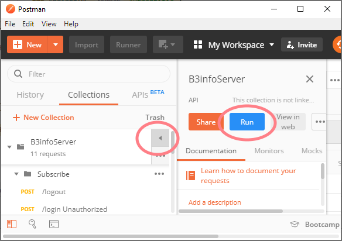

Dev back-end
Project server d'API
Le serveur
- Technologie: libre
- Port: 1337
- Protocol: HTTP
- Type d'API: REST
Service
Description du service via Postman :
Débogage
Un environnement de développement DOIT comprendre la possibilité d'utiliser un débogueur.
Voir les fichiers README.md des projets précédents pour configurer le celui de VSCode
Evaluation
- Importer la Collection Postman
- Importer l'Environnement Postman
- Lancer le serveur d'API Haxe ou Go
- Jouer la collection
- Faites évoluer le serveur jusqu'à ce que tous les tests passent

Suite du projet
- Faire persister les identifiants dans une base de données lors de l'inscription
- Permettre l'enregistrement de données via API /save
- Permettre la lecture de données via API /load
- Ouvrir un canal websocket
- Ecouter les "message"
- Envoyer une notification lorsque le message ne n'importe quel utilisateur est déclenché